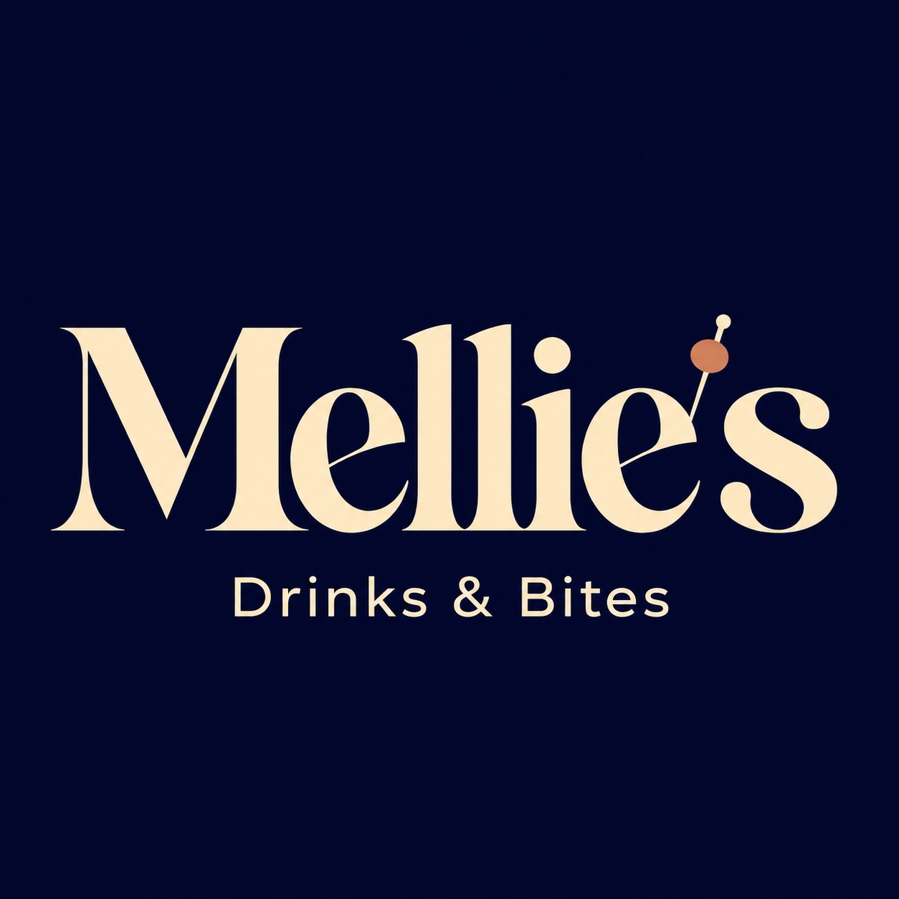
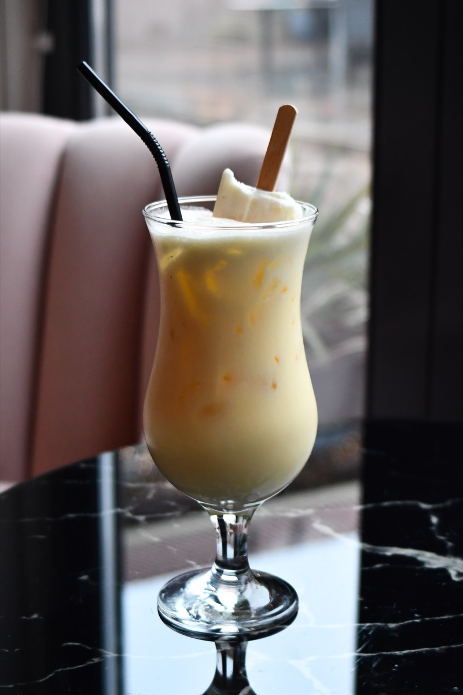
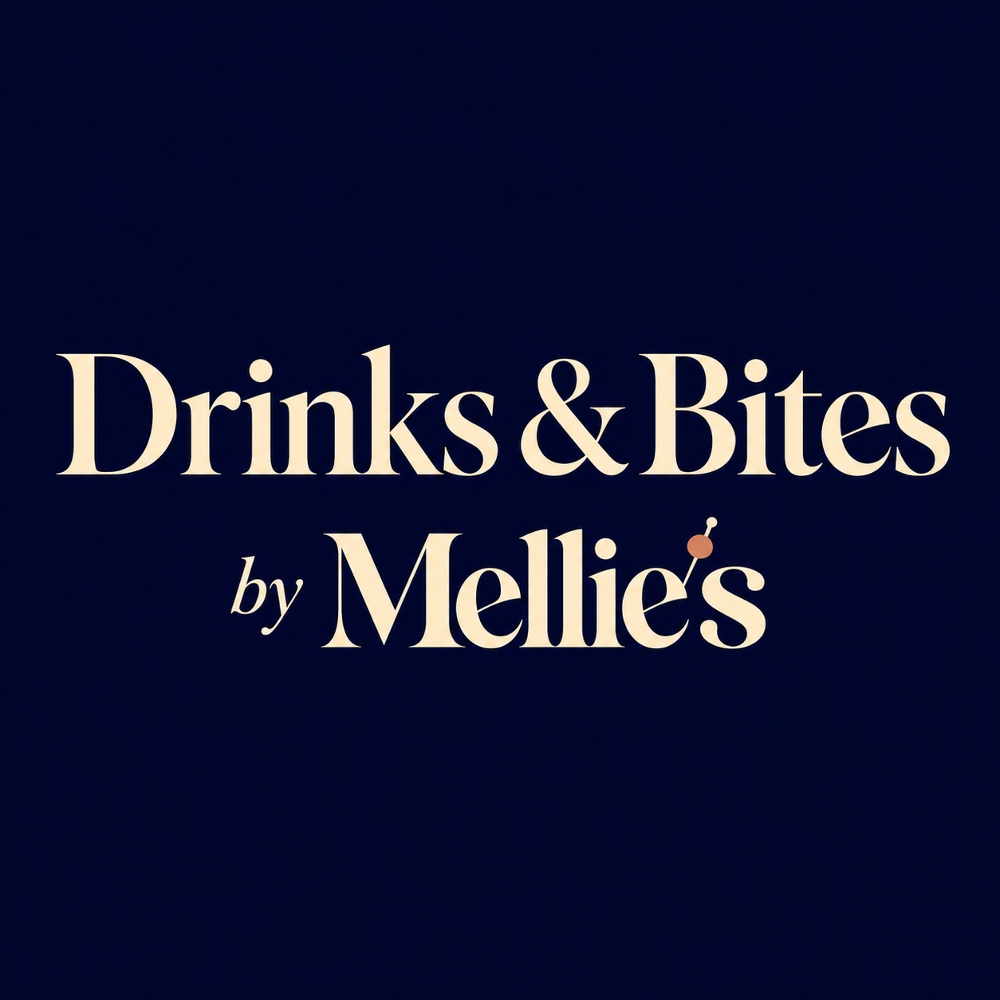

Cocktails · borrelplanken · Zoetermeer
Schuif aan.
Blijf hangen.
Bij Mellie’s in Zoetermeer
Een borrel in de Dorpsstraat, met cocktails, lokaal gebrouwen bier en iets lekkers om te delen. Of je nu even binnenloopt of de hele avond blijft: bij Melanie ben je welkom.



Welkom bij Mellie’s
Een plek om te blijven hangen.
Mellie’s wordt gerund door Melanie. Hier draait het om samen genieten: een borrelplank op tafel, een goede cocktail in je hand en tijd voor elkaar. Ook later op de dag ben je welkom om te ontspannen aan de bar.
Van de bar
Voor ieder borrelmoment.
Cocktails ↗
Onze favorieten ↗Aan de Dorpsstraat
Een tafel voor jou?
Op woensdag en van donderdag tot en met zondag ben je welkom. Vraag je tafel aan; Melanie bevestigt de reservering persoonlijk.
Reserveer een tafel ↗
Events
Een avond bij Mellie’s.
Volg het eventnieuws of neem contact op als je iets te vieren hebt.
Ontdek de events ↗Bezoek ons
Tot aan de bar.
Dorpsstraat 110H · 2712 AM Zoetermeer